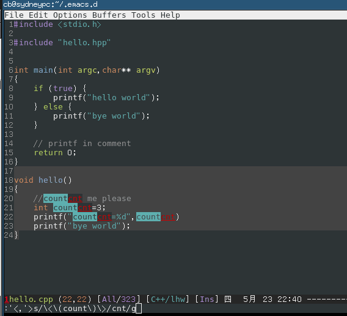

How to refactor/rename a variable name in a function efficiently
As we dicussed in Emacs community at Google+. Although multiple-cursor is good for this task, I cannot use it because it conflicts with my favourite evil-mode (Vim simulation in Emacs).
There is another emacs plugin called iedit which could do the similar job (I usually use its command called iedit-mode-toggle-on-function)
Though iedit is good, there is still room for improvement. When using iedit-mode-toggle-on-function, we need press key twice to rename the variable name. Once to enable it, twice to disable it.
Magnar Sveen pointed out in the G+ discussion that the key point we need plugins like multiple-cursor or iedit-mode is that we can see all the changes while doing the editing.
This reminds me that evil-mode has a excellent regex string replacing mode which also show the changes when you are typing EACH character of new string.
So by using evil-mode's default regex replacing command, I can implement similar feature even more efficiently then iedit-mode!
Here is my elisp code:
(defun evilcvn-change-symbol-in-defun () "mark the region in defun (definition of function) and use string replacing UI in evil-mode to replace the symbol under cursor" (interactive) (let ((old (thing-at-point 'symbol))) (mark-defun) (unless (evil-visual-state-p) (evil-visual-state)) (evil-ex (concat "'<,'>s/" (if (= 0 (length old)) "" "\<\(") old (if (= 0 (length old)) "" "\)\>/")))) ) (global-set-key (kbd "C-c ; s") 'evilcvn-change-symbol-in-defun)
Put you cursor above a symbol/variable and press hot key "Ctrl-c ; s", then the regex to replace that symbol is automatically created and inserted into mini-buffer. Now you only need type new string and watch.
This is the screen shot (I renamed variable "count" into "cnt" in C++ function hello): 